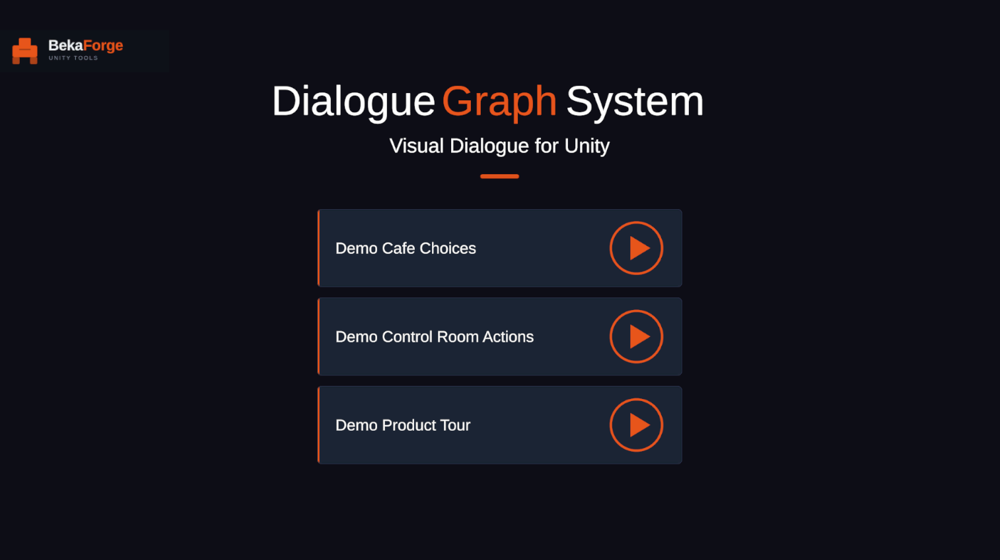

Getting Started
Start here if you want to understand the project quickly, open the right demo scene first, and see how the runtime and editor pieces fit together before integrating anything into your own game.
What this project is
Dialog Graph System is a Unity asset with a clear editor/runtime split. Authoring happens in editor-only GraphView tools under Assets/DialogGraphSystem/Scripts/Editor. Playback happens through runtime components under Assets/DialogGraphSystem/Scripts/Runtime.
The main runtime coordinator is DialogManager. It reads a DialogGraph, shows lines and choices through DialogUIController, executes optional action nodes through DialogActionRunner, and exposes events for history and game-side integration.
Fastest way to see it running
- Open the project in Unity 2021.3 LTS or newer (verified on Unity 6).
- Open
Assets/DialogGraphSystem/DemoScenes/DialogueDemo.unity. - Enter Play Mode.
- Choose one of the three sample graphs from the demo menu:
- Cafe Choices — branching conversation with player choices.
- Control Room Actions — action nodes and waitable coroutine behavior.
- Product Tour — linear dialogue with typewriter and portrait effects.
First concepts to understand
DialogGraph: the ScriptableObject that stores node collections and links.DialogManager: the runtime state machine that traverses the graph.DialogUIController: the bridge used to render lines, portraits, and choices.DialogActionRunner: dispatches action nodes to UnityEvents or coroutine handlers.DialogueHistory: records shown lines and selected choices for backlog display.DialogGraphView: the graph authoring surface built on GraphView.
Minimum runtime setup
You need one DialogManager in the scene, one DialogUIController wired to scene UI, and at least one DialogGraph mapped to a dialogID.
using DialogSystem.Runtime.Core;
using UnityEngine;
public class GuardIntroStarter : MonoBehaviour
{
public void Begin()
{
DialogManager.Instance.PlayDialogByID("intro_guard");
}
}First realistic flow
- Create a
DialogGraphasset in the editor. - Add dialog, choice, and optional action nodes.
- Connect the graph from
StarttoEnd. - Assign the graph to a
dialogIDinDialogManager. - Call
PlayDialogByID. - Let the manager drive UI, input, audio, and optional actions.
- Read history or the rebuilt transcript if you need reporting.
Recommended screenshots for this page
Demo scene

The included demo scene entry point — open this first to see a working conversation in Play Mode.
Runtime dialogue panel

Shows readers what working looks like in Play Mode.
Graph editor overview

Helps connect the authoring model to the runtime flow early.